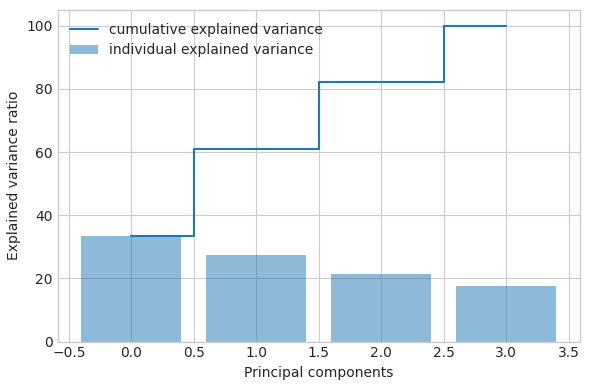
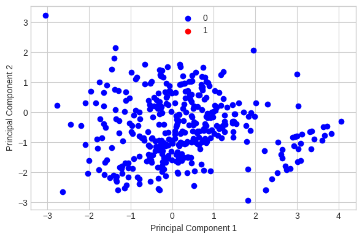
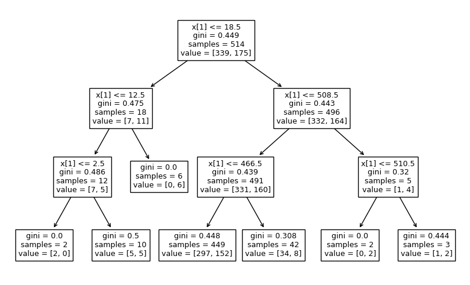

Akuransi sklearnPCA pada Data Iris#
Naive PCA
import pandas as pd
import numpy as np
import seaborn as sns
import matplotlib.pyplot as plt
df=pd.read_csv('https://raw.githubusercontent.com/Firdatulayuni/Pendata/main/diabetes.csv', sep=',')
df.head()
| Pregnancies | Glucose | BloodPressure | SkinThickness | Insulin | BMI | DiabetesPedigreeFunction | Age | Outcome | |
|---|---|---|---|---|---|---|---|---|---|
| 0 | 6 | 148 | 72 | 35 | 0 | 33.6 | 0.627 | 50 | 1 |
| 1 | 1 | 85 | 66 | 29 | 0 | 26.6 | 0.351 | 31 | 0 |
| 2 | 8 | 183 | 64 | 0 | 0 | 23.3 | 0.672 | 32 | 1 |
| 3 | 1 | 89 | 66 | 23 | 94 | 28.1 | 0.167 | 21 | 0 |
| 4 | 0 | 137 | 40 | 35 | 168 | 43.1 | 2.288 | 33 | 1 |
df['Outcome'].value_counts()
0 500
1 268
Name: Outcome, dtype: int64
df.columns
Index(['Pregnancies', 'Glucose', 'BloodPressure', 'SkinThickness', 'Insulin',
'BMI', 'DiabetesPedigreeFunction', 'Age', 'Outcome'],
dtype='object')
X=df.iloc[:,0:4].values
y=df.iloc[:,4].values
label_dict={1: '0',
2: '1',}
feature_dict={0: 'Pregnancies',1: 'Glucose',2: 'BloodPressure',3: 'SkinThickness',4:'Insulin',5:'BMI',6:'DiabetesPedigreeFunction',7:'Age'}
with plt.style.context('seaborn-whitegrid'):
plt.figure(figsize=(8,6))
for i in range(4):
plt.subplot(2,2,i+1)
for lab in ('0','1'):
plt.hist(X[y==lab, i],
label=lab,
bins=10,
alpha=0.3)
plt.xlabel(feature_dict[i])
plt.legend(loc='upper right', fancybox=True,fontsize=8)
plt.tight_layout()
plt.show()
<ipython-input-6-bc4ec050f3d9>:10: FutureWarning: elementwise comparison failed; returning scalar instead, but in the future will perform elementwise comparison
plt.hist(X[y==lab, i],
from sklearn.preprocessing import StandardScaler
X_std=StandardScaler().fit_transform(X)
X_std.shape[0]-1
767
mean_vec=np.mean(X_std,axis=0)
cov_mat=(X_std-mean_vec).T.dot((X_std-mean_vec))/(X_std.shape[0]-1)
print("Covariance Matrix \n%s" %cov_mat)
Covariance Matrix
[[ 1.00130378 0.12962746 0.14146618 -0.08177826]
[ 0.12962746 1.00130378 0.15278853 0.05740263]
[ 0.14146618 0.15278853 1.00130378 0.2076409 ]
[-0.08177826 0.05740263 0.2076409 1.00130378]]
print("Numpy Covariance matrix \n%s" %np.cov(X_std.T))
Numpy Covariance matrix
[[ 1.00130378 0.12962746 0.14146618 -0.08177826]
[ 0.12962746 1.00130378 0.15278853 0.05740263]
[ 0.14146618 0.15278853 1.00130378 0.2076409 ]
[-0.08177826 0.05740263 0.2076409 1.00130378]]
cov_mat=np.cov(X_std.T)
eig_vals, eig_vecs=np.linalg.eig(cov_mat)
print("Eigenvectors \n%s" %eig_vecs)
print("Eigenvelues \n%s" %eig_vals)
Eigenvectors
[[-0.3802311 -0.66273917 -0.47243579 0.43932395]
[-0.51768534 -0.23643252 -0.01615659 -0.8220952 ]
[-0.65183196 0.14400966 0.65383237 0.35620155]
[-0.4031641 0.69580003 -0.59080167 0.06537896]]
Eigenvelues
[1.33359737 1.10266638 0.70768598 0.8612654 ]
Korelasi Matriks
corr_mat1=np.corrcoef(X_std.T)
eig_vals, eig_vecs=np.linalg.eig(corr_mat1)
print("Eigenvectors \n%s" %eig_vecs)
print("Eigenvelues \n%s" %eig_vals)
Eigenvectors
[[-0.3802311 -0.66273917 -0.47243579 0.43932395]
[-0.51768534 -0.23643252 -0.01615659 -0.8220952 ]
[-0.65183196 0.14400966 0.65383237 0.35620155]
[-0.4031641 0.69580003 -0.59080167 0.06537896]]
Eigenvelues
[1.33186091 1.10123062 0.70676451 0.86014396]
Eigendekomposisi data mentah berdasarkan matriks korelasi
cor_mat2=np.corrcoef(X.T)
eig_vals, eig_vecs=np.linalg.eig(cor_mat2)
print("Eigenvectors \n%s" %eig_vecs)
print("Eigenvelues \n%s" %eig_vals)
Eigenvectors
[[-0.3802311 -0.66273917 -0.47243579 0.43932395]
[-0.51768534 -0.23643252 -0.01615659 -0.8220952 ]
[-0.65183196 0.14400966 0.65383237 0.35620155]
[-0.4031641 0.69580003 -0.59080167 0.06537896]]
Eigenvelues
[1.33186091 1.10123062 0.70676451 0.86014396]
Dekomposisi Nilai Singular
u, s, v=np.linalg.svd(X_std.T)
u
array([[-0.3802311 , 0.66273917, -0.43932395, 0.47243579],
[-0.51768534, 0.23643252, 0.8220952 , 0.01615659],
[-0.65183196, -0.14400966, -0.35620155, -0.65383237],
[-0.4031641 , -0.69580003, -0.06537896, 0.59080167]])
Mengurutkan Eigenpair
for ev in eig_vecs.T:
np.testing.assert_array_almost_equal(1.0, np.linalg.norm(ev))
print("Everithing is ok")
Everithing is ok
# Make a list of (eigenvalue, eigenvector) tuples
eig_pairs = [(np.abs(eig_vals[i]), eig_vecs[:,i]) for i in range(len(eig_vals))]
# Sort the (eigenvalue, eigenvector) tuples from high to low
eig_pairs.sort(key=lambda x: x[0], reverse=True)
# Visually confirm that the list is correctly sorted by decreasing eigenvalues
print('Eigenvalues in descending order:')
for i in eig_pairs:
print(i[0])
Eigenvalues in descending order:
1.33186091183117
1.1012306163545809
0.8601439581670371
0.7067645136472116
Menjelaskan Varians
tot = sum(eig_vals)
var_exp = [(i / tot)*100 for i in sorted(eig_vals, reverse=True)]
cum_var_exp = np.cumsum(var_exp)
with plt.style.context('seaborn-whitegrid'):
plt.figure(figsize=(6, 4))
plt.bar(range(4), var_exp, alpha=0.5, align='center',
label='individual explained variance')
plt.step(range(4), cum_var_exp, where='mid',
label='cumulative explained variance')
plt.ylabel('Explained variance ratio')
plt.xlabel('Principal components')
plt.legend(loc='best')
plt.tight_layout()

Matriks Proyeksi
matrix_w = np.hstack((eig_pairs[0][1].reshape(4,1),
eig_pairs[1][1].reshape(4,1)))
print('Matrix W:\n', matrix_w)
Matrix W:
[[-0.3802311 -0.66273917]
[-0.51768534 -0.23643252]
[-0.65183196 0.14400966]
[-0.4031641 0.69580003]]
Proyeksi Ke Ruang Fitur Baru
Y = X_std.dot(matrix_w)
import matplotlib.pyplot as plt
import numpy as np
y = y.astype(str) # Mengubah tipe data y menjadi str
with plt.style.context('seaborn-whitegrid'):
plt.figure(figsize=(6, 4))
for lab, col in zip(('0', '1'), ('blue', 'red')):
plt.scatter(Y[y==lab, 0], Y[y==lab, 1], label=lab, c=col)
plt.xlabel('Principal Component 1')
plt.ylabel('Principal Component 2')
plt.legend(loc='lower center')
plt.tight_layout()
plt.show()
Shortcut - PCA in scikit-learn
from sklearn.decomposition import PCA as sklearnPCA
sklearn_pca = sklearnPCA(n_components=2)
Y_sklearn = sklearn_pca.fit_transform(X_std)
with plt.style.context('seaborn-whitegrid'):
plt.figure(figsize=(6, 4))
for lab, col in zip(('0', '1'),
('blue', 'red')):
plt.scatter(Y_sklearn[y==lab, 0],
Y_sklearn[y==lab, 1],
label=lab,
c=col)
plt.xlabel('Principal Component 1')
plt.ylabel('Principal Component 2')
plt.legend(loc='upper center')
plt.tight_layout()
plt.show()

NAIVE PCA#
data=pd.DataFrame(Y_sklearn)
data.columns=['X','Y']
data
| X | Y | |
|---|---|---|
| 0 | -1.145812 | 0.028139 |
| 1 | 0.793426 | 1.171827 |
| 2 | -0.783991 | -2.211648 |
| 3 | 0.880356 | 0.880351 |
| 4 | 0.788250 | 1.052164 |
| ... | ... | ... |
| 763 | -1.299537 | 0.185858 |
| 764 | -0.003180 | 0.643716 |
| 765 | -0.291964 | -0.099013 |
| 766 | 1.064732 | -0.441968 |
| 767 | 0.478437 | 1.229702 |
768 rows × 2 columns
data['Outcome']=df['Outcome']
data
| X | Y | Outcome | |
|---|---|---|---|
| 0 | -1.145812 | 0.028139 | 1 |
| 1 | 0.793426 | 1.171827 | 0 |
| 2 | -0.783991 | -2.211648 | 1 |
| 3 | 0.880356 | 0.880351 | 0 |
| 4 | 0.788250 | 1.052164 | 1 |
| ... | ... | ... | ... |
| 763 | -1.299537 | 0.185858 | 0 |
| 764 | -0.003180 | 0.643716 | 0 |
| 765 | -0.291964 | -0.099013 | 0 |
| 766 | 1.064732 | -0.441968 | 1 |
| 767 | 0.478437 | 1.229702 | 0 |
768 rows × 3 columns
dataset =data
X = dataset.iloc[:,:2].values
y = dataset['Outcome'].values
dataset.head(5)
| X | Y | Outcome | |
|---|---|---|---|
| 0 | -1.145812 | 0.028139 | 1 |
| 1 | 0.793426 | 1.171827 | 0 |
| 2 | -0.783991 | -2.211648 | 1 |
| 3 | 0.880356 | 0.880351 | 0 |
| 4 | 0.788250 | 1.052164 | 1 |
from sklearn.model_selection import train_test_split
X_train, X_test, y_train, y_test = train_test_split(X, y, test_size = 0.2, random_state=42)
from sklearn.preprocessing import StandardScaler
sc = StandardScaler()
X_train = sc.fit_transform(X_train)
X_test = sc.transform(X_test)
from sklearn.naive_bayes import GaussianNB
classifier = GaussianNB()
classifier.fit(X_train, y_train)
GaussianNB()In a Jupyter environment, please rerun this cell to show the HTML representation or trust the notebook.
On GitHub, the HTML representation is unable to render, please try loading this page with nbviewer.org.
GaussianNB()
y_pred = classifier.predict(X_test)
y_pred
array([0, 0, 0, 0, 1, 0, 0, 0, 0, 0, 1, 1, 0, 0, 0, 0, 0, 0, 0, 0, 0, 0,
1, 0, 1, 1, 0, 0, 0, 0, 0, 0, 1, 0, 0, 1, 1, 0, 1, 0, 0, 0, 0, 1,
0, 0, 0, 0, 0, 0, 0, 1, 1, 0, 0, 0, 0, 0, 0, 0, 1, 0, 1, 1, 0, 0,
0, 1, 0, 0, 1, 0, 0, 0, 0, 1, 0, 0, 0, 0, 1, 0, 0, 0, 0, 1, 1, 0,
0, 0, 0, 0, 0, 0, 0, 0, 0, 0, 0, 0, 0, 0, 1, 0, 0, 0, 0, 1, 0, 0,
0, 1, 0, 1, 0, 0, 0, 0, 0, 0, 0, 0, 1, 0, 0, 1, 0, 1, 1, 1, 1, 1,
0, 1, 1, 0, 1, 1, 1, 0, 0, 0, 0, 0, 0, 0, 0, 0, 0, 1, 0, 0, 0, 0])
from sklearn.metrics import confusion_matrix
cm = confusion_matrix(y_test, y_pred)
from sklearn.metrics import accuracy_score
print ("Accuracy : ", accuracy_score(y_test, y_pred))
cm
Accuracy : 0.7532467532467533
array([[88, 11],
[27, 28]])
KNN PCA#
data=pd.DataFrame(Y_sklearn)
data.columns=['X','Y']
data
| X | Y | |
|---|---|---|
| 0 | -1.145812 | 0.028139 |
| 1 | 0.793426 | 1.171827 |
| 2 | -0.783991 | -2.211648 |
| 3 | 0.880356 | 0.880351 |
| 4 | 0.788250 | 1.052164 |
| ... | ... | ... |
| 763 | -1.299537 | 0.185858 |
| 764 | -0.003180 | 0.643716 |
| 765 | -0.291964 | -0.099013 |
| 766 | 1.064732 | -0.441968 |
| 767 | 0.478437 | 1.229702 |
768 rows × 2 columns
data['Outcome']=df['Outcome']
data
| X | Y | Outcome | |
|---|---|---|---|
| 0 | -1.145812 | 0.028139 | 1 |
| 1 | 0.793426 | 1.171827 | 0 |
| 2 | -0.783991 | -2.211648 | 1 |
| 3 | 0.880356 | 0.880351 | 0 |
| 4 | 0.788250 | 1.052164 | 1 |
| ... | ... | ... | ... |
| 763 | -1.299537 | 0.185858 | 0 |
| 764 | -0.003180 | 0.643716 | 0 |
| 765 | -0.291964 | -0.099013 | 0 |
| 766 | 1.064732 | -0.441968 | 1 |
| 767 | 0.478437 | 1.229702 | 0 |
768 rows × 3 columns
dataset = data
X = dataset.iloc[:,:2].values
y = dataset['Outcome'].values
dataset.head(5)
| X | Y | Outcome | |
|---|---|---|---|
| 0 | -1.145812 | 0.028139 | 1 |
| 1 | 0.793426 | 1.171827 | 0 |
| 2 | -0.783991 | -2.211648 | 1 |
| 3 | 0.880356 | 0.880351 | 0 |
| 4 | 0.788250 | 1.052164 | 1 |
from sklearn.model_selection import train_test_split
X_train, X_test, y_train, y_test = train_test_split(X, y, test_size = 0.2, random_state=42)
from sklearn.preprocessing import StandardScaler
sc = StandardScaler()
X_train = sc.fit_transform(X_train)
X_test = sc.transform(X_test)
from sklearn.neighbors import KNeighborsClassifier
classifier = KNeighborsClassifier(n_neighbors=5)
classifier.fit(X_train, y_train)
KNeighborsClassifier()In a Jupyter environment, please rerun this cell to show the HTML representation or trust the notebook.
On GitHub, the HTML representation is unable to render, please try loading this page with nbviewer.org.
KNeighborsClassifier()
y_pred = classifier.predict(X_test)
y_pred
array([0, 0, 0, 0, 1, 0, 0, 0, 1, 0, 1, 1, 0, 0, 0, 0, 0, 0, 1, 0, 0, 0,
1, 0, 0, 1, 0, 0, 0, 0, 1, 0, 0, 1, 0, 1, 1, 0, 1, 1, 0, 0, 0, 0,
0, 0, 0, 0, 0, 0, 0, 1, 1, 0, 0, 0, 0, 0, 0, 0, 1, 0, 1, 1, 0, 1,
0, 1, 0, 0, 0, 1, 1, 0, 1, 1, 0, 0, 0, 1, 1, 0, 0, 1, 0, 1, 1, 0,
0, 0, 0, 0, 0, 0, 0, 0, 1, 0, 0, 1, 0, 0, 1, 0, 0, 0, 0, 1, 1, 0,
0, 1, 0, 1, 1, 0, 0, 0, 0, 0, 0, 0, 1, 0, 0, 1, 0, 1, 0, 1, 0, 1,
0, 1, 1, 0, 0, 1, 1, 0, 0, 0, 0, 0, 0, 0, 0, 0, 0, 1, 0, 1, 0, 0])
from sklearn.metrics import confusion_matrix
cm = confusion_matrix(y_test, y_pred)
from sklearn.metrics import accuracy_score
print ("Accuracy : ", accuracy_score(y_test, y_pred))
cm
Accuracy : 0.6948051948051948
array([[79, 20],
[27, 28]])
df = pd.DataFrame({'Real Values':y_test, 'Predicted Values':y_pred})
df
| Real Values | Predicted Values | |
|---|---|---|
| 0 | 0 | 0 |
| 1 | 0 | 0 |
| 2 | 0 | 0 |
| 3 | 0 | 0 |
| 4 | 0 | 1 |
| ... | ... | ... |
| 149 | 1 | 1 |
| 150 | 0 | 0 |
| 151 | 0 | 1 |
| 152 | 1 | 0 |
| 153 | 0 | 0 |
154 rows × 2 columns
ANNBP PCA#
df=pd.read_csv('https://raw.githubusercontent.com/Firdatulayuni/Pendata/main/diabetes.csv')
df.head()
| Pregnancies | Glucose | BloodPressure | SkinThickness | Insulin | BMI | DiabetesPedigreeFunction | Age | Outcome | |
|---|---|---|---|---|---|---|---|---|---|
| 0 | 6 | 148 | 72 | 35 | 0 | 33.6 | 0.627 | 50 | 1 |
| 1 | 1 | 85 | 66 | 29 | 0 | 26.6 | 0.351 | 31 | 0 |
| 2 | 8 | 183 | 64 | 0 | 0 | 23.3 | 0.672 | 32 | 1 |
| 3 | 1 | 89 | 66 | 23 | 94 | 28.1 | 0.167 | 21 | 0 |
| 4 | 0 | 137 | 40 | 35 | 168 | 43.1 | 2.288 | 33 | 1 |
data=pd.DataFrame(Y_sklearn)
data.columns=['X','Y',]
data
| X | Y | |
|---|---|---|
| 0 | -1.145812 | 0.028139 |
| 1 | 0.793426 | 1.171827 |
| 2 | -0.783991 | -2.211648 |
| 3 | 0.880356 | 0.880351 |
| 4 | 0.788250 | 1.052164 |
| ... | ... | ... |
| 763 | -1.299537 | 0.185858 |
| 764 | -0.003180 | 0.643716 |
| 765 | -0.291964 | -0.099013 |
| 766 | 1.064732 | -0.441968 |
| 767 | 0.478437 | 1.229702 |
768 rows × 2 columns
data['Outcome']=df['Outcome']
data
| X | Y | Outcome | |
|---|---|---|---|
| 0 | -1.145812 | 0.028139 | 1 |
| 1 | 0.793426 | 1.171827 | 0 |
| 2 | -0.783991 | -2.211648 | 1 |
| 3 | 0.880356 | 0.880351 | 0 |
| 4 | 0.788250 | 1.052164 | 1 |
| ... | ... | ... | ... |
| 763 | -1.299537 | 0.185858 | 0 |
| 764 | -0.003180 | 0.643716 | 0 |
| 765 | -0.291964 | -0.099013 | 0 |
| 766 | 1.064732 | -0.441968 | 1 |
| 767 | 0.478437 | 1.229702 | 0 |
768 rows × 3 columns
dt=data
dt
| X | Y | Outcome | |
|---|---|---|---|
| 0 | -1.145812 | 0.028139 | 1 |
| 1 | 0.793426 | 1.171827 | 0 |
| 2 | -0.783991 | -2.211648 | 1 |
| 3 | 0.880356 | 0.880351 | 0 |
| 4 | 0.788250 | 1.052164 | 1 |
| ... | ... | ... | ... |
| 763 | -1.299537 | 0.185858 | 0 |
| 764 | -0.003180 | 0.643716 | 0 |
| 765 | -0.291964 | -0.099013 | 0 |
| 766 | 1.064732 | -0.441968 | 1 |
| 767 | 0.478437 | 1.229702 | 0 |
768 rows × 3 columns
from sklearn.neural_network import MLPClassifier
from sklearn.model_selection import train_test_split
from sklearn.metrics import accuracy_score
from sklearn.metrics import confusion_matrix
y = dt['Outcome']
x = dt.drop(['Outcome'], axis=1)
x_train, x_test, y_train, y_test = train_test_split(x,y, test_size= 0.2, random_state=27)
clf = MLPClassifier(hidden_layer_sizes=(100,100,100), max_iter=1000, alpha=0.0001,
solver='sgd', verbose=10, random_state=21,tol=0.001)
clf.fit(x_train, y_train)
y_pred=clf.predict(x_test)
Iteration 1, loss = 0.69011779
Iteration 2, loss = 0.68778209
Iteration 3, loss = 0.68451085
Iteration 4, loss = 0.68081005
Iteration 5, loss = 0.67696872
Iteration 6, loss = 0.67257925
Iteration 7, loss = 0.66850908
Iteration 8, loss = 0.66486772
Iteration 9, loss = 0.66162283
Iteration 10, loss = 0.65885360
Iteration 11, loss = 0.65649147
Iteration 12, loss = 0.65431598
Iteration 13, loss = 0.65208454
Iteration 14, loss = 0.65006370
Iteration 15, loss = 0.64803458
Iteration 16, loss = 0.64601387
Iteration 17, loss = 0.64394829
Iteration 18, loss = 0.64194626
Iteration 19, loss = 0.63994066
Iteration 20, loss = 0.63820309
Iteration 21, loss = 0.63659411
Iteration 22, loss = 0.63507568
Iteration 23, loss = 0.63345130
Iteration 24, loss = 0.63192352
Iteration 25, loss = 0.63051566
Iteration 26, loss = 0.62919839
Iteration 27, loss = 0.62783382
Iteration 28, loss = 0.62649161
Iteration 29, loss = 0.62518012
Iteration 30, loss = 0.62390160
Iteration 31, loss = 0.62265108
Iteration 32, loss = 0.62154515
Iteration 33, loss = 0.62034060
Iteration 34, loss = 0.61921313
Iteration 35, loss = 0.61815972
Iteration 36, loss = 0.61713860
Iteration 37, loss = 0.61621886
Iteration 38, loss = 0.61526541
Iteration 39, loss = 0.61422582
Iteration 40, loss = 0.61331852
Iteration 41, loss = 0.61237690
Iteration 42, loss = 0.61139107
Iteration 43, loss = 0.61049014
Iteration 44, loss = 0.60966279
Iteration 45, loss = 0.60863392
Iteration 46, loss = 0.60755114
Iteration 47, loss = 0.60640863
Iteration 48, loss = 0.60533328
Iteration 49, loss = 0.60424023
Iteration 50, loss = 0.60321515
Iteration 51, loss = 0.60217450
Iteration 52, loss = 0.60130218
Iteration 53, loss = 0.60034863
Iteration 54, loss = 0.59947549
Iteration 55, loss = 0.59849738
Iteration 56, loss = 0.59754725
Iteration 57, loss = 0.59665911
Iteration 58, loss = 0.59579245
Iteration 59, loss = 0.59490226
Iteration 60, loss = 0.59406148
Iteration 61, loss = 0.59325776
Iteration 62, loss = 0.59254121
Training loss did not improve more than tol=0.001000 for 10 consecutive epochs. Stopping.
accuracy_score(y_test, y_pred)
0.7467532467532467
df = pd.DataFrame({'Real Values':y_test, 'Predicted Values':y_pred})
df
| Real Values | Predicted Values | |
|---|---|---|
| 223 | 0 | 0 |
| 461 | 0 | 0 |
| 175 | 1 | 1 |
| 636 | 0 | 0 |
| 349 | 1 | 0 |
| ... | ... | ... |
| 88 | 1 | 1 |
| 719 | 1 | 0 |
| 371 | 0 | 0 |
| 390 | 0 | 0 |
| 491 | 0 | 0 |
154 rows × 2 columns
DT PCA#
df=pd.read_csv('https://raw.githubusercontent.com/Firdatulayuni/Pendata/main/diabetes.csv')
df.head()
| Pregnancies | Glucose | BloodPressure | SkinThickness | Insulin | BMI | DiabetesPedigreeFunction | Age | Outcome | |
|---|---|---|---|---|---|---|---|---|---|
| 0 | 6 | 148 | 72 | 35 | 0 | 33.6 | 0.627 | 50 | 1 |
| 1 | 1 | 85 | 66 | 29 | 0 | 26.6 | 0.351 | 31 | 0 |
| 2 | 8 | 183 | 64 | 0 | 0 | 23.3 | 0.672 | 32 | 1 |
| 3 | 1 | 89 | 66 | 23 | 94 | 28.1 | 0.167 | 21 | 0 |
| 4 | 0 | 137 | 40 | 35 | 168 | 43.1 | 2.288 | 33 | 1 |
data=pd.DataFrame(Y_sklearn)
data.columns=['X','Y']
data
| X | Y | |
|---|---|---|
| 0 | -1.145812 | 0.028139 |
| 1 | 0.793426 | 1.171827 |
| 2 | -0.783991 | -2.211648 |
| 3 | 0.880356 | 0.880351 |
| 4 | 0.788250 | 1.052164 |
| ... | ... | ... |
| 763 | -1.299537 | 0.185858 |
| 764 | -0.003180 | 0.643716 |
| 765 | -0.291964 | -0.099013 |
| 766 | 1.064732 | -0.441968 |
| 767 | 0.478437 | 1.229702 |
768 rows × 2 columns
data['Outcome']=df['Outcome']
data
| X | Y | Outcome | |
|---|---|---|---|
| 0 | -1.145812 | 0.028139 | 1 |
| 1 | 0.793426 | 1.171827 | 0 |
| 2 | -0.783991 | -2.211648 | 1 |
| 3 | 0.880356 | 0.880351 | 0 |
| 4 | 0.788250 | 1.052164 | 1 |
| ... | ... | ... | ... |
| 763 | -1.299537 | 0.185858 | 0 |
| 764 | -0.003180 | 0.643716 | 0 |
| 765 | -0.291964 | -0.099013 | 0 |
| 766 | 1.064732 | -0.441968 | 1 |
| 767 | 0.478437 | 1.229702 | 0 |
768 rows × 3 columns
df = data
df
| X | Y | Outcome | |
|---|---|---|---|
| 0 | -1.145812 | 0.028139 | 1 |
| 1 | 0.793426 | 1.171827 | 0 |
| 2 | -0.783991 | -2.211648 | 1 |
| 3 | 0.880356 | 0.880351 | 0 |
| 4 | 0.788250 | 1.052164 | 1 |
| ... | ... | ... | ... |
| 763 | -1.299537 | 0.185858 | 0 |
| 764 | -0.003180 | 0.643716 | 0 |
| 765 | -0.291964 | -0.099013 | 0 |
| 766 | 1.064732 | -0.441968 | 1 |
| 767 | 0.478437 | 1.229702 | 0 |
768 rows × 3 columns
df['Outcome'].value_counts()
0 500
1 268
Name: Outcome, dtype: int64
df.isnull().sum()
X 0
Y 0
Outcome 0
dtype: int64
X = df.drop(['Outcome'], axis=1)
y = df['Outcome']
from sklearn.model_selection import train_test_split
X_train, X_test, y_train, y_test = train_test_split(X, y, test_size = 0.33, random_state = 21)
X_train.shape, X_test.shape
((514, 2), (254, 2))
X_train.dtypes
X float64
Y float64
dtype: object
!pip install category_encoders
import category_encoders as ce
Looking in indexes: https://pypi.org/simple, https://us-python.pkg.dev/colab-wheels/public/simple/
Collecting category_encoders
Downloading category_encoders-2.6.1-py2.py3-none-any.whl (81 kB)
?25l ━━━━━━━━━━━━━━━━━━━━━━━━━━━━━━━━━━━━━━━━ 0.0/81.9 kB ? eta -:--:--
━━━━━━━━━━━━━━━━━━━━━━━━━━━━━━━━━━━━━━━━ 81.9/81.9 kB 5.2 MB/s eta 0:00:00
?25hRequirement already satisfied: numpy>=1.14.0 in /usr/local/lib/python3.10/dist-packages (from category_encoders) (1.22.4)
Requirement already satisfied: scikit-learn>=0.20.0 in /usr/local/lib/python3.10/dist-packages (from category_encoders) (1.2.2)
Requirement already satisfied: scipy>=1.0.0 in /usr/local/lib/python3.10/dist-packages (from category_encoders) (1.10.1)
Requirement already satisfied: statsmodels>=0.9.0 in /usr/local/lib/python3.10/dist-packages (from category_encoders) (0.13.5)
Requirement already satisfied: pandas>=1.0.5 in /usr/local/lib/python3.10/dist-packages (from category_encoders) (1.5.3)
Requirement already satisfied: patsy>=0.5.1 in /usr/local/lib/python3.10/dist-packages (from category_encoders) (0.5.3)
Requirement already satisfied: python-dateutil>=2.8.1 in /usr/local/lib/python3.10/dist-packages (from pandas>=1.0.5->category_encoders) (2.8.2)
Requirement already satisfied: pytz>=2020.1 in /usr/local/lib/python3.10/dist-packages (from pandas>=1.0.5->category_encoders) (2022.7.1)
Requirement already satisfied: six in /usr/local/lib/python3.10/dist-packages (from patsy>=0.5.1->category_encoders) (1.16.0)
Requirement already satisfied: joblib>=1.1.1 in /usr/local/lib/python3.10/dist-packages (from scikit-learn>=0.20.0->category_encoders) (1.2.0)
Requirement already satisfied: threadpoolctl>=2.0.0 in /usr/local/lib/python3.10/dist-packages (from scikit-learn>=0.20.0->category_encoders) (3.1.0)
Requirement already satisfied: packaging>=21.3 in /usr/local/lib/python3.10/dist-packages (from statsmodels>=0.9.0->category_encoders) (23.1)
Installing collected packages: category_encoders
Successfully installed category_encoders-2.6.1
encoder = ce.OrdinalEncoder(cols=["X","Y"])
X_train = encoder.fit_transform(X_train)
X_test = encoder.transform(X_test)
X_train.head()
| X | Y | |
|---|---|---|
| 76 | 1 | 1 |
| 222 | 2 | 2 |
| 425 | 3 | 3 |
| 728 | 4 | 4 |
| 494 | 5 | 5 |
X_test.head()
| X | Y | |
|---|---|---|
| 93 | -1.0 | -1.0 |
| 42 | -1.0 | -1.0 |
| 194 | -1.0 | -1.0 |
| 130 | -1.0 | -1.0 |
| 676 | -1.0 | -1.0 |
from sklearn.tree import DecisionTreeClassifier
clf_gini = DecisionTreeClassifier(criterion='gini', max_depth=3, random_state=21)
clf_gini.fit(X_train, y_train)
DecisionTreeClassifier(max_depth=3, random_state=21)In a Jupyter environment, please rerun this cell to show the HTML representation or trust the notebook.
On GitHub, the HTML representation is unable to render, please try loading this page with nbviewer.org.
DecisionTreeClassifier(max_depth=3, random_state=21)
y_pred_gini = clf_gini.predict(X_test)
from sklearn.metrics import accuracy_score
print('Model accuracy score with criterion gini index: {0:0.2f}'. format(accuracy_score(y_test, y_pred_gini)))
Model accuracy score with criterion gini index: 0.63
y_pred_train_gini = clf_gini.predict(X_train)
y_pred_train_gini
array([0, 0, 0, 0, 0, 0, 0, 0, 0, 0, 0, 0, 1, 1, 1, 1, 1, 1, 0, 0, 0, 0,
0, 0, 0, 0, 0, 0, 0, 0, 0, 0, 0, 0, 0, 0, 0, 0, 0, 0, 0, 0, 0, 0,
0, 0, 0, 0, 0, 0, 0, 0, 0, 0, 0, 0, 0, 0, 0, 0, 0, 0, 0, 0, 0, 0,
0, 0, 0, 0, 0, 0, 0, 0, 0, 0, 0, 0, 0, 0, 0, 0, 0, 0, 0, 0, 0, 0,
0, 0, 0, 0, 0, 0, 0, 0, 0, 0, 0, 0, 0, 0, 0, 0, 0, 0, 0, 0, 0, 0,
0, 0, 0, 0, 0, 0, 0, 0, 0, 0, 0, 0, 0, 0, 0, 0, 0, 0, 0, 0, 0, 0,
0, 0, 0, 0, 0, 0, 0, 0, 0, 0, 0, 0, 0, 0, 0, 0, 0, 0, 0, 0, 0, 0,
0, 0, 0, 0, 0, 0, 0, 0, 0, 0, 0, 0, 0, 0, 0, 0, 0, 0, 0, 0, 0, 0,
0, 0, 0, 0, 0, 0, 0, 0, 0, 0, 0, 0, 0, 0, 0, 0, 0, 0, 0, 0, 0, 0,
0, 0, 0, 0, 0, 0, 0, 0, 0, 0, 0, 0, 0, 0, 0, 0, 0, 0, 0, 0, 0, 0,
0, 0, 0, 0, 0, 0, 0, 0, 0, 0, 0, 0, 0, 0, 0, 0, 0, 0, 0, 0, 0, 0,
0, 0, 0, 0, 0, 0, 0, 0, 0, 0, 0, 0, 0, 0, 0, 0, 0, 0, 0, 0, 0, 0,
0, 0, 0, 0, 0, 0, 0, 0, 0, 0, 0, 0, 0, 0, 0, 0, 0, 0, 0, 0, 0, 0,
0, 0, 0, 0, 0, 0, 0, 0, 0, 0, 0, 0, 0, 0, 0, 0, 0, 0, 0, 0, 0, 0,
0, 0, 0, 0, 0, 0, 0, 0, 0, 0, 0, 0, 0, 0, 0, 0, 0, 0, 0, 0, 0, 0,
0, 0, 0, 0, 0, 0, 0, 0, 0, 0, 0, 0, 0, 0, 0, 0, 0, 0, 0, 0, 0, 0,
0, 0, 0, 0, 0, 0, 0, 0, 0, 0, 0, 0, 0, 0, 0, 0, 0, 0, 0, 0, 0, 0,
0, 0, 0, 0, 0, 0, 0, 0, 0, 0, 0, 0, 0, 0, 0, 0, 0, 0, 0, 0, 0, 0,
0, 0, 0, 0, 0, 0, 0, 0, 0, 0, 0, 0, 0, 0, 0, 0, 0, 0, 0, 0, 0, 0,
0, 0, 0, 0, 0, 0, 0, 0, 0, 0, 0, 0, 0, 0, 0, 0, 0, 0, 0, 0, 0, 0,
0, 0, 0, 0, 0, 0, 0, 0, 0, 0, 0, 0, 0, 0, 0, 0, 0, 0, 0, 0, 0, 0,
0, 0, 0, 0, 0, 0, 0, 0, 0, 0, 0, 0, 0, 0, 0, 0, 0, 0, 0, 0, 0, 0,
0, 0, 0, 0, 0, 0, 0, 0, 0, 0, 0, 0, 0, 0, 0, 0, 0, 0, 0, 0, 0, 0,
0, 0, 0, 1, 1, 1, 1, 1])
print('Training-set accuracy score: {0:0.2f}'. format(accuracy_score(y_train, y_pred_train_gini)))
Training-set accuracy score: 0.68
print('Training set score: {:.2f}'.format(clf_gini.score(X_train, y_train)))
print('Test set score: {:.2f}'.format(clf_gini.score(X_test, y_test)))
Training set score: 0.68
Test set score: 0.63
plt.figure(figsize=(10,6))
from sklearn import tree
tree.plot_tree(clf_gini.fit(X_train, y_train))
plt.show()
